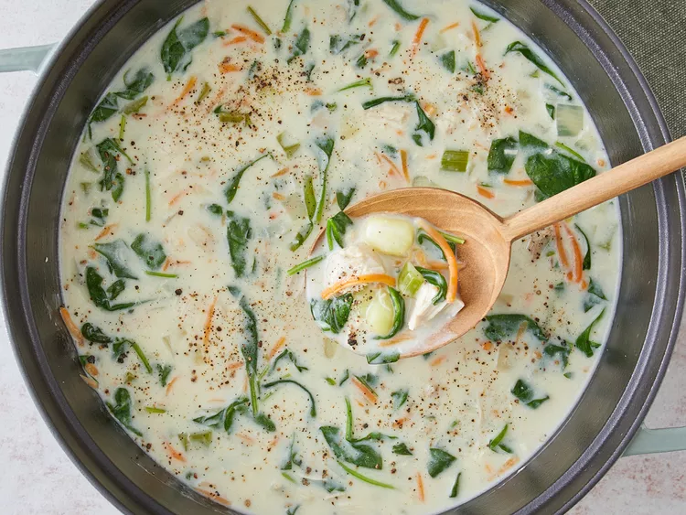

Creamy Chicken and Gnocchi Soup

This chicken and gnocchi soup is so comforting and delicious — it will
warm you inside and out. It's one of the best soups that I have had in a
long time. Enjoy!
Ingredients
- 1tbsp Olive Oil
- 1 small onion, diced
- 3 stalks celery, diced
- 3 cloves garlic, minced
- 2 carrots, shredded
- 1lb cooked, cubed chicken breast
- 4 cups chicken broth
- 16oz mini potato gnocchi
- 6oz baby spinach
- 1tbsp cornstarch (optional)
- 2tbsp cold water (optional)
- 2 cups half-and-half cream
- Salt and Cracked Black Pepper to taste
Directions
- Gather all ingredients
-
Heat oil in a large pot over medium heat. Cook carrots, celery, onion,
and garlic in hot oil until onion is translucent, about 5 minutes. Stir
in cubed chicken and chicken broth; bring to a simmer.
-
Stir gnocchi into soup and cook until they begin to float, 3 to 4
minutes. Stir in spinach and cook until wilted, about 3 minutes.
-
Whisk cornstarch into cold water in a measuring cup until smooth. Stir
the cornstarch mixture and half-and-half into soup. Cook until soup
thickens slightly, about 5 minutes. Season with salt and pepper.